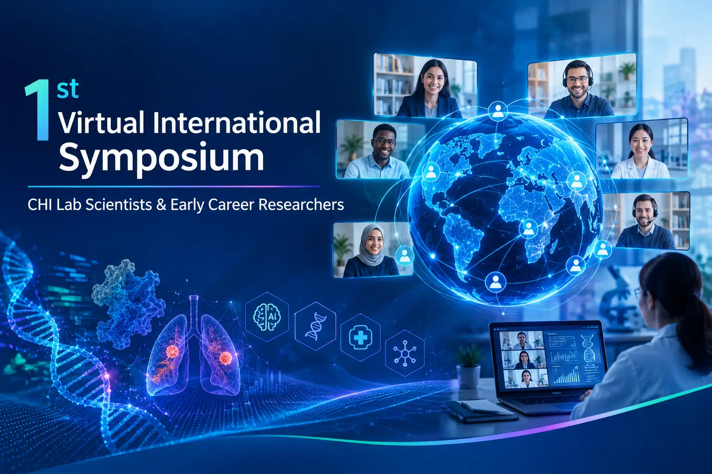

01
Scientific Research
Present computational and interdisciplinary work across healthcare, biomedical systems, AI, machine learning, data science and related research areas.
A virtual research forum bringing together CHI Lab scientists and Early Career Researchers to share computational healthcare research, emerging ideas, reproducible work, and scientific collaboration.

The symposium website provides a central place for researchers and ECRs to explore the event, research themes, scientific contributions, and submission routes.
Present computational and interdisciplinary work across healthcare, biomedical systems, AI, machine learning, data science and related research areas.
Highlight emerging researchers, research prototypes, reproducible experiments, literature-driven projects and collaborative scientific development.
Connect scientists and researchers through a virtual platform designed to support communication, knowledge exchange and future collaboration.
CHI Lab brings together computational science, artificial intelligence, data-driven methods and biomedical research. The symposium can showcase work spanning multi-omics, computational biology, medical AI, cancer research, federated learning, intelligent systems and related areas.
Use the dedicated submission forms for research papers and scientific posters.